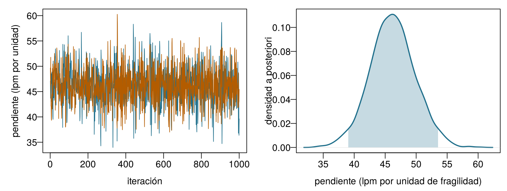
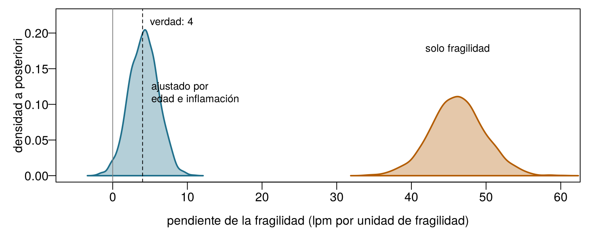

icu8 = FileAttachment("data/icu_aki.csv").csv({typed: true})
akiD = icu8.filter(d => d.site === "ICU_D").map(d => d.delta_creatinine_48h >= 0.3 ? 1 : 0)
viewof m0 = Inputs.range([0.05, 0.95], {value: 0.5, step: 0.01, label: "Media a priori"})
viewof s0 = Inputs.range([2, 300], {value: 2, step: 1, label: "Fuerza a priori (pacientes imaginarios)"})
viewof nD = Inputs.range([0, 313], {value: 10, step: 1, label: "Pacientes de ICU_D observados, n"})8 Aprendizaje bayesiano e incertidumbre predictiva
Una UCI recién inaugurada ha ingresado a sus 10 primeros pacientes; 2 desarrollaron LRA. Antes de la inauguración, Emma creía que la tasa de LRA de la unidad sería de alrededor del 60 %, y estaba tan segura como si ya hubiera visto 10 pacientes, 6 de ellos con LRA. Trata su creencia como 10 pacientes imaginarios, suma los 10 reales y calcula qué debería creer ahora. Se admiten decimales.
| Pregunta | Tu respuesta |
|---|---|
| Pacientes con LRA, imaginarios más reales | |
| Total de pacientes, imaginarios más reales | |
| Estimación actualizada de Emma para la tasa de LRA (una proporción) | |
| Si su creencia hubiera valido 100 pacientes imaginarios (60 con LRA), la estimación actualizada quedaría… |
Cómo usar este capítulo
¿Empiezas aquí?
Este capítulo toma prestadas algunas ideas de los anteriores. En una línea cada una:
- Modelos y decisiones. Un modelo (Definición 1.3) convierte datos en información; una decisión
- combina esa información con valores. Con las puntuaciones usadas en el Capítulo 1, el paquete de protección renal es la mejor opción siempre que la probabilidad de LRA esté por encima del umbral \(t = 0{,}25\) (Sección 1.5).
- Probabilidad, verosimilitud y teorema de Bayes (Capítulo 2). La verosimilitud \(L(\theta)\) mide lo bien que cada valor de un parámetro \(\theta\) explica los datos; el teorema de Bayes convierte una distribución a priori en una a posteriori: a posteriori ∝ verosimilitud × a priori. El umbral para actuar es \(t = C_{\text{FP}}/(C_{\text{FP}} + C_{\text{FN}})\), fijado por las pérdidas de los dos tipos de error.
- Conjuntos de entrenamiento y de prueba (Capítulo 3). Los modelos se evalúan en pacientes que no han visto; la UCI Sala 7 usa la partición común del libro (1000 pacientes de entrenamiento y 250 de prueba). La raíz del error cuadrático medio (RMSE) y el error absoluto medio (MAE) miden errores numéricos.
- Regresión lineal y logística (Capítulo 4, Capítulo 5). Un modelo lineal predice \(\beta_0 + \beta_1 x_1 + \dots\); un modelo logístico pasa la misma suma por la función logística, con forma de S, para obtener una probabilidad. El Capítulo 4 también presentó los intervalos de confianza y los intervalos de predicción.
- Árboles y bosques (Capítulo 6). Los bosques aleatorios y el boosting suman muchos árboles; predicen bien, pero dan un único número, sin ninguna indicación de incertidumbre.
| Ejemplo | Quién o qué | Desenlace | Caras que vas a conocer |
|---|---|---|---|
| 1 UCI Sala 7 | 1250 pacientes de UCI en 4 hospitales | variación de la creatinina en 48 h (lesión renal aguda si ≥ 0,3 mg/dL) | Aoife (71 años, sepsis, riesgo limítrofe), Tomás (54 años, riesgo bajo), Priya (38 años, riesgo alto); la Dra. Emma Walsh; Seán, el farmacéutico |
| 2 Ensayo ONCO-1 | 1000 pacientes aleatorizados a quimioterapia o no | reducción del tumor (%) | pacientes #0042 y #0917 |
| 3 HomeBeat | 500 personas que llevan un reloj inteligente en casa | puntuación de estrés, evento de deterioro | Lena |
| 4 CellWorks | 420 lotes de producción de una terapia celular | puntuación de potencia | lote CW-118 |
Los cuatro conjuntos de datos son simulados y pueden descargarse en el apéndice de datos. La presentación completa está en la Sección 1.1.
Este capítulo enseña a los modelos a comunicar su incertidumbre. Tiene nueve secciones y un Laboratorio, seis comprobaciones rápidas, tres widgets “Pruébalo”, un desafío y tres misiones de programación en R y Python. Reserva unas dos horas. Los modelos más pesados (los muestreadores de Stan y BART) se ejecutaron una sola vez, fuera del navegador, y sus muestras se cargan aquí; en el navegador usas fórmulas exactas y rejillas, que dan las mismas respuestas para los modelos más sencillos.
Notación de un vistazo (solo para consulta)
| Símbolo | Significado | Sección |
|---|---|---|
| \(\theta\) | un parámetro (aquí, una tasa de LRA, una media o un coeficiente) | Sección 8.1 |
| \(p(\theta)\), \(p(\theta \mid \mathbf{y})\) | distribución a priori y a posteriori de \(\theta\) | Sección 8.1 |
| \(\text{Beta}(a, b)\) | distribución beta; \(a\) y \(b\) funcionan como recuentos a priori de “sí” y “no” | Sección 8.2 |
| \(\beta_0, \beta_1, \sigma\) | intercepto, pendiente y desviación típica residual de una regresión | Sección 8.3 |
| \(\theta^{(s)}\), \(S\) | la \(s\)-ésima de \(S\) muestras de la distribución a posteriori | Sección 8.4 |
| \(\widehat{R}\), ESS | R-hat y tamaño efectivo de muestra, dos diagnósticos de MCMC | Sección 8.4 |
| \(\tilde y\) | un desenlace futuro de un paciente nuevo | Sección 8.6 |
| \(m\) | número de árboles en BART | Sección 8.8 |
La lista completa está en la página de notación.
8.1 Del teorema de Bayes al aprendizaje bayesiano
En el Capítulo 2, el teorema de Bayes actualizaba la probabilidad de una condición (fragilidad, LRA) en cuanto llegaba una evidencia: una frecuencia cardíaca alta, un análisis de orina positivo. La regla era siempre la misma, a posteriori ∝ verosimilitud × a priori. El aprendizaje bayesiano aplica exactamente la misma regla a los parámetros de un modelo: la tasa de LRA de un hospital, la frecuencia cardíaca media de una población, la pendiente de una recta de regresión (Gelman et al. 2013; McElreath 2020).
El Capítulo 2 también presentó las dos escuelas de inferencia. En la visión frecuentista, un parámetro es una constante fija y desconocida; calculamos una única mejor estimación (a menudo por máxima verosimilitud) y describimos cómo variaría esa estimación en muestras repetidas. En la visión bayesiana, los datos, una vez observados, son fijos, y lo incierto es el parámetro; esa incertidumbre se describe con una distribución de probabilidad, antes de los datos (la distribución a priori) y después de ellos (la distribución a posteriori). Ambas visiones usan la misma verosimilitud. La diferencia está en lo que cada una permite decir: solo la visión bayesiana permite afirmar “la probabilidad de que esta tasa de LRA esté por encima del 60 % es 0,9”, una frase que clínicos y gestores suelen querer oír (Spiegelhalter, Abrams, y Myles 2004).
Definición 8.1 (Distribución a priori y a posteriori de un parámetro) Para un parámetro \(\theta\) y unos datos \(\mathbf{y}\), la distribución a priori \(p(\theta)\) describe lo que se sabe o se supone sobre \(\theta\) antes de ver los datos, y la distribución a posteriori describe lo que se sabe después:
\[ p(\theta \mid \mathbf{y}) = \frac{p(\mathbf{y} \mid \theta)\, p(\theta)}{p(\mathbf{y})} \;\propto\; \underbrace{p(\mathbf{y} \mid \theta)}_{\text{verosimilitud}} \times \underbrace{p(\theta)}_{\text{a priori}} . \]
El denominador \(p(\mathbf{y})\) no depende de \(\theta\); solo hace que la distribución a posteriori integre 1. Todo resumen que necesitamos (una mejor estimación, un intervalo, la probabilidad de que \(\theta\) supere un valor) se lee en la distribución a posteriori (Gelman et al. 2013).
El ciclo de la Figura 8.1 es la forma en que los clínicos ya razonan. Emma tiene una expectativa sobre un paciente nuevo antes del primer análisis de sangre; cada resultado la desplaza; la expectativa desplazada es su punto de partida cuando llega el siguiente resultado. Un modelo bayesiano hace lo mismo, de forma explícita y con números. De ello se derivan tres consecuencias, y el resto del capítulo ilustra cada una. Con pocos datos, la distribución a priori pesa y la distribución a posteriori es ancha. Con muchos datos, la verosimilitud domina y las respuestas bayesiana y frecuentista casi coinciden. Y, como el resultado es una distribución entera, puede trasladarse a predicciones y decisiones con su incertidumbre intacta.
8.2 Aprender una proporción: la distribución a priori beta
La forma más rápida de ver el aprendizaje bayesiano es estimar una sola proporción. Una gestora pregunta cuál es la tasa de LRA en el hospital ICU_D, uno de los cuatro hospitales de la UCI Sala 7. Los otros tres hospitales, juntos, han tratado a 937 pacientes, con una tasa de LRA de 0,55. ICU_D tiene registros de 313 pacientes. Supón que los examinamos de uno en uno, como si fueran llegando.
En la puerta de entrada juntaste pacientes imaginarios y reales. Eso es exactamente lo que hace la distribución beta. Una distribución a priori \(\text{Beta}(a, b)\) para una tasa de LRA \(\theta\) se comporta como \(a\) pacientes imaginarios con LRA y \(b\) sin ella; su media es \(a/(a+b)\), y se vuelve más estrecha a medida que crece la fuerza de la distribución a priori, \(a + b\). Si luego observamos \(k\) casos de LRA entre \(n\) pacientes reales, la distribución a posteriori vuelve a ser una distribución beta,
\[ \theta \mid \text{datos} \sim \text{Beta}(a + k,\; b + n - k), \qquad \mathbb{E}[\theta \mid \text{datos}] = \frac{a + k}{a + b + n} . \qquad(8.1)\]
La media a posteriori es un término medio entre la media a priori \(a/(a+b)\) y la proporción observada \(k/n\), ponderado por la fuerza de la distribución a priori, \(a + b\), y por el tamaño de la muestra, \(n\). Cuando la distribución a posteriori pertenece a la misma familia que la distribución a priori, esta se llama conjugada; las distribuciones a priori conjugadas reducen la actualización bayesiana a sumar recuentos (Gelman et al. 2013, cap. 2).
Definición 8.2 (Elección de la distribución a priori; distribución a priori conjugada) Una distribución a priori es informativa cuando codifica conocimiento real (estudios anteriores, otros hospitales, opinión de expertos), débilmente informativa cuando solo excluye valores inverosímiles (una tasa de LRA está entre 0 y 1; una pendiente de 1000 lpm por unidad de fragilidad es absurda) y plana o vaga cuando trata todos los valores como casi igual de plausibles (Gelman et al. 2008). Una distribución a priori es conjugada de una verosimilitud cuando la distribución a posteriori tiene la misma forma que ella, como ocurre con la distribución a priori beta para una verosimilitud binomial. Sea cual sea la elección, debe declararse, justificarse y comprobarse con un análisis de sensibilidad: vuelve a ajustar el modelo con otra distribución a priori razonable y mira si la conclusión cambia (Spiegelhalter, Abrams, y Myles 2004).
Para ICU_D, una distribución a priori informativa natural toma prestado de los otros tres hospitales: media 0,55 y una fuerza de 100 pacientes, es decir, \(\text{Beta}(55, 45)\). Tras los primeros 20 pacientes de ICU_D (12 con LRA), la Ecuación 8.1 da una media a posteriori de 0,558, con un intervalo del 95 % de 0,47 a 0,65. Con una distribución a priori plana, \(\text{Beta}(1, 1)\), los mismos 20 pacientes dan un intervalo de 0,38 a 0,78: el conocimiento prestado vale mucho cuando hay pocos datos. Tras los 313 pacientes (212 con LRA), la distribución a priori informativa da 0,646 (0,60–0,69), cerca de la proporción observada 0,677: los datos han tomado el mando. Pruébalo tú mismo.
A priori, verosimilitud, a posteriori. Las curvas describen lo que se cree sobre la tasa de LRA de ICU_D. Gris: la distribución a priori. Naranja: la verosimilitud de los pacientes observados hasta ahora, reescalada a la misma área. Azul: la distribución a posteriori, que es (proporcional a) el producto de ambas. Los pacientes se toman en el orden del archivo de datos. Objetivo: fija una distribución a priori escéptica igual a la tasa de los otros hospitales (media a priori 0,55), con una fuerza de al menos 100 pacientes, y averigua cuántos pacientes de ICU_D hacen falta para que el intervalo de credibilidad del 95 % deje de contener 0,55.
Fíjate en tres cosas del widget. Con \(n = 0\), la distribución a posteriori es la distribución a priori: sin datos no hay aprendizaje. Con una distribución a priori plana (media 0,5, fuerza 2), la distribución a posteriori sigue a la verosimilitud casi exactamente, y su pico es la estimación de máxima verosimilitud \(k/n\) del Capítulo 2. Y, por fuerte que sea la distribución a priori, unos datos suficientes acaban imponiéndose, aunque una distribución a priori que vale cientos de pacientes necesita cientos de pacientes para ser superada. Por eso una distribución a priori fuerte debe justificarse con evidencias de un peso equivalente.
Para curiosos: aprender una media, y por qué la distribución a posteriori es una media ponderada
La misma lógica sirve para la media \(\mu\) de una medida como la frecuencia cardíaca en reposo, modelada como normal con una desviación típica \(\sigma\) que tratamos como conocida. Con una distribución a priori normal \(\mu \sim \mathcal{N}(m, s^2)\) y \(n\) observaciones con media \(\bar y\), la distribución a posteriori también es normal, con
\[ \mathbb{E}[\mu \mid \mathbf{y}] = \frac{m/s^2 + n\bar y/\sigma^2}{1/s^2 + n/\sigma^2}, \qquad \operatorname{Var}(\mu \mid \mathbf{y}) = \frac{1}{1/s^2 + n/\sigma^2} . \]
El inverso de una varianza se llama precisión. La media a posteriori es una media de la media a priori y la media de los datos ponderada por las precisiones, y la precisión a posteriori es la suma de las dos precisiones: la información se suma (Gelman et al. 2013, cap. 2). Para los 10 primeros participantes de HomeBeat (media 73,6 lpm), una distribución a priori \(\mathcal{N}(70, 10^2)\) y \(\sigma = 12\) lpm dan una media a posteriori de 73,1 lpm, con una desviación típica de 3,5 lpm; los datos reciben un peso de 0,87 y la distribución a priori, 0,13. Con los 500 participantes, el peso de la distribución a priori caería por debajo de 0,01.
Dos analistas estiman la tasa de LRA de ICU_D. Una usa una distribución a priori plana; la otra toma prestada de los otros hospitales una distribución a priori que vale 100 pacientes. ¿Qué afirmación es correcta?
Actualiza la tasa de ICU_D sumando recuentos. La distribución a priori es \(\text{Beta}(55, 45)\). El código cuenta los casos de LRA k entre los primeros n = 20 pacientes de ICU_D y devuelve el intervalo de credibilidad del 95 % de la distribución a posteriori con qbeta(), la función cuantil de la distribución beta. Rellena el hueco para que el segundo parámetro de forma cuente los pacientes sin LRA.
La distribución a posteriori es \(\text{Beta}(a + k,\; b + n - k)\).
qbeta(c(0.025, 0.975), a + k, b + n - k)La distribución a posteriori es \(\text{Beta}(a + k,\; b + n - k)\).
beta.ppf([0.025, 0.975], a + k, b + n - k)8.3 Regresión lineal bayesiana
Una proporción tiene un parámetro. Una regresión tiene varios, y el aprendizaje bayesiano los trata todos como inciertos a la vez. Volvemos al ensayo HomeBeat y nos preguntamos cómo se relaciona la frecuencia cardíaca en reposo con la fragilidad: un índice de fragilidad entre 0 (persona en buena forma) y alrededor de 0,8 (muy frágil), registrado al entrar en el estudio. El modelo más sencillo es la recta del Capítulo 4:
\[ \text{FC}_i \sim \mathcal{N}\!\left(\beta_0 + \beta_1\, \text{fragilidad}_i,\; \sigma^2\right), \qquad i = 1, \dots, 500 . \qquad(8.2)\]
Léelo así: la frecuencia cardíaca en reposo del participante \(i\) se extrae de una distribución normal cuya media está sobre la recta \(\beta_0 + \beta_1\,\text{fragilidad}_i\) y cuya desviación típica, \(\sigma\), describe la dispersión alrededor de la recta. Los mínimos cuadrados (Capítulo 4) dan una única pendiente, \(\hat\beta_1 =\) 47,6 lpm por unidad de fragilidad, con un intervalo de confianza del 95 % de 40,4 a 54,8. Un modelo bayesiano añade una distribución a priori para cada incógnita:
\[ \beta_0 \sim \mathcal{N}(60, 20^2), \qquad \beta_1 \sim \mathcal{N}(0, 20^2), \qquad \sigma \sim \text{seminormal}(10) . \qquad(8.3)\]
Son distribuciones a priori débiles. La del intercepto dice que la frecuencia cardíaca de un participante con fragilidad media está probablemente en algún punto entre 20 y 100 lpm.1 La de la pendiente está centrada en cero (ninguna asociación) y admite asociaciones de cualquier signo de hasta unos 40 lpm por unidad de fragilidad. La distribución a priori seminormal para \(\sigma\), una distribución normal plegada en cero, dice que la dispersión alrededor de la recta es positiva y probablemente inferior a 20 lpm (Gelman 2006). El teorema de Bayes da entonces la distribución a posteriori conjunta de las tres incógnitas,
1 El paquete de R que se usa más abajo, rstanarm, aplica la distribución a priori del intercepto al valor de la recta en la media de los predictores, y no en fragilidad = 0, porque ese intercepto es mucho menos incierto y más fácil de interpretar. Devuelve el intercepto en la escala habitual.
\[ p(\beta_0, \beta_1, \sigma \mid \mathbf{y}) \;\propto\; \prod_{i=1}^{500} \mathcal{N}\!\left(\text{FC}_i \mid \beta_0 + \beta_1\,\text{fragilidad}_i, \sigma^2\right) \; p(\beta_0)\, p(\beta_1)\, p(\sigma) . \]
Definición 8.3 (Regresión bayesiana) Una regresión bayesiana es un modelo de regresión (lineal, logística u otra) en el que los coeficientes y cualquier otra incógnita (como \(\sigma\)) reciben distribuciones a priori, y el resultado del ajuste es su distribución a posteriori conjunta, en lugar de un único conjunto de estimaciones. Los resúmenes puntuales (media o mediana a posteriori), los intervalos y las probabilidades como \(P(\beta_1 > 0 \mid \text{datos})\) se leen todos en esa distribución a posteriori (Gelman et al. 2013, cap. 14).
Con tres incógnitas no hay una fórmula sencilla para la distribución a posteriori. En la práctica se calcula por muestreo, con software como Stan (Carpenter et al. 2017) y su interfaz para R, rstanarm (Goodrich et al. 2024). Este es el código que produjo las muestras usadas en este capítulo; se ejecuta en pocos segundos en un portátil, pero no en el navegador, así que sus resultados se cargan desde un archivo.
library(rstanarm)
fit_simple <- stan_glm(
resting_hr ~ frailty, data = hb, family = gaussian(),
prior_intercept = normal(60, 20, autoscale = FALSE),
prior = normal(0, 20, autoscale = FALSE),
prior_aux = normal(0, 10, autoscale = FALSE), # sigma: una seminormal(10)
chains = 2, iter = 2000, seed = 2026)autoscale = FALSE hace que rstanarm use exactamente las distribuciones a priori escritas arriba, en lugar de reescalarlas según la dispersión de los datos, como hace por defecto. El resultado es una tabla de 2000 muestras a posteriori: 2000 combinaciones plausibles de \((\beta_0, \beta_1, \sigma)\), cada una compatible con los datos y con las distribuciones a priori. Los resúmenes son simplemente resúmenes de las muestras (Tabla 8.1).
| Parámetro | Media a posteriori | DT a posteriori | Intervalo de credibilidad del 95 % |
|---|---|---|---|
| \(\beta_0\) (intercepto, lpm) | 51,6 | 1,51 | 48,6 a 54,6 |
| \(\beta_1\) (lpm por unidad de fragilidad) | 46,2 | 3,64 | 39,0 a 53,5 |
| \(\sigma\) (lpm) | 11,2 | 0,35 | 10,5 a 11,9 |
La media a posteriori de la pendiente, 46,2, queda algo más cerca de cero que la pendiente de mínimos cuadrados, 47,6: la distribución a priori, centrada en cero, tira un poco. Es la misma contracción (shrinkage) que viste con la regresión ridge en el Capítulo 4: con una distribución a priori normal centrada en cero, el valor más probable de los coeficientes es exactamente una estimación ridge (Hastie, Tibshirani, y Friedman 2009, sec. 3.4). Observa también que la distribución a posteriori está centrada más allá del rango de pendientes que la distribución a priori consideraba más plausibles (±40): 500 participantes bastan para superar una distribución a priori débil, a cambio de un pequeño tirón hacia cero. Con 30 participantes, el tirón sería mucho mayor.
Puedes calcular tú mismo esta distribución a posteriori, sin Stan, por fuerza bruta: prueba una rejilla fina de pendientes candidatas y evalúa verosimilitud × a priori en cada una.
Una distribución a posteriori en una rejilla. Para que la rejilla sea unidimensional, el código mantiene fijos el intercepto (en la frecuencia cardíaca media, tras centrar la fragilidad) y \(\sigma\), y explora solo la pendiente \(\beta_1\). Calcula el logaritmo de la verosimilitud y el logaritmo de la distribución a priori para 1001 pendientes candidatas. Rellena el hueco para que el logaritmo de la distribución a posteriori sea el logaritmo de la verosimilitud más el logaritmo de la distribución a priori; el logaritmo convierte “verosimilitud × a priori” en una suma. La última línea devuelve la media a posteriori de la pendiente.
El vector con los valores del logaritmo de la distribución a priori ya está en el código, una línea por encima del hueco.
logpost <- loglik + logpriorEl array con los valores del logaritmo de la distribución a priori ya está en el código, una línea por encima del hueco.
logpost = loglik + logpriorUna rejilla funciona para uno o dos parámetros. Con diez parámetros y 100 puntos de rejilla para cada uno, haría falta \(100^{10}\) evaluaciones, más de las que puede hacer cualquier máquina. Por eso necesitamos un camino más inteligente.
8.4 Cómo se calcula la distribución a posteriori: MCMC
La idea que hay detrás del cálculo bayesiano moderno es sustituir una fórmula por una muestra. Si pudiéramos extraer miles de valores \(\theta^{(1)}, \dots, \theta^{(S)}\) de la distribución a posteriori, toda pregunta se convertiría en un recuento: la media a posteriori es la media de las muestras, un intervalo del 95 % va del percentil 2,5 al percentil 97,5 de las muestras, y \(P(\beta_1 > 0 \mid \text{datos})\) es la proporción de muestras por encima de cero. Esta es la idea de Monte Carlo, llamada así por el casino (Metropolis y Ulam 1949).
La dificultad está en obtener las muestras cuando la distribución a posteriori solo se conoce salvo la constante \(p(\mathbf{y})\). El Monte Carlo mediante cadenas de Markov (MCMC, Markov chain Monte Carlo) lo resuelve con un paseo aleatorio. Imagina a un caminante sobre el paisaje de la distribución a posteriori. En cada paso, el caminante propone moverse a un punto cercano; los movimientos cuesta arriba (hacia valores más plausibles) se aceptan siempre, los movimientos cuesta abajo solo a veces, con una probabilidad igual al cociente entre las dos alturas. Solo hace falta ese cociente, así que la constante desconocida se cancela. Al cabo de un tiempo, el caminante visita cada región del paisaje en proporción a su probabilidad a posteriori. Este es el algoritmo de Metropolis (Metropolis et al. 1953; Hastings 1970). Stan usa un pariente más eficiente, el Monte Carlo hamiltoniano con el No-U-Turn sampler, que usa la pendiente del paisaje para dar pasos largos y bien dirigidos, en lugar de pasos cortos y aleatorios (Neal 2011; Hoffman y Gelman 2014; Carpenter et al. 2017).
Definición 8.4 (Monte Carlo mediante cadenas de Markov (MCMC); gráfico de trazas, R-hat, tamaño efectivo de muestra) El MCMC produce una secuencia de muestras (una cadena) cuya distribución se aproxima a la distribución a posteriori. La primera parte de cada cadena, el calentamiento (warm-up), se descarta. Se ejecutan varias cadenas desde puntos de partida distintos y se comprueba que coinciden mediante tres diagnósticos estándar (Gelman y Rubin 1992; Vehtari et al. 2021; Gabry et al. 2019):
- un gráfico de trazas (trace plot) muestra el valor de cada cadena frente a la iteración; las cadenas sanas se superponen y parecen una “oruga peluda”, sin tendencia y sin tramos planos;
- el R-hat (\(\widehat{R}\)) compara la variación entre cadenas con la variación dentro de ellas; los valores próximos a 1 (en la práctica actual, por debajo de 1,01) sugieren que las cadenas coinciden;
- el tamaño efectivo de muestra (ESS, effective sample size) es el número de muestras independientes que contendrían la misma información que las muestras correlacionadas de las cadenas; unos cientos suelen bastar para medias e intervalos del 95 %.
Diagnosticar es una habilidad del ojo. Los cuatro paneles de la Figura 8.2 muestran tres cadenas cada uno para el mismo parámetro (la pendiente de la fragilidad de la Ecuación 8.2), producidas por cuatro muestreadores ajustados de forma distinta. Solo uno de ellos es fiable.
![Cuatro paneles con tres cadenas de colores cada uno. Panel A: las tres cadenas empiezan muy separadas, cerca de 100, 50 y menos 10, y se acercan lentamente sin llegar a encontrarse. Panel B: las cadenas suben y bajan lentamente entre 44 y 52, cada una en su propia región durante tramos largos. Panel C: las tres cadenas se superponen por completo y oscilan rápidamente entre aproximadamente 38 y 54, como una oruga peluda. Panel D: las cadenas son líneas planas durante tramos largos, con solo unos pocos saltos bruscos.](ch08.es_files/figure-html/fig-ch08-traces-1.png)
Asocia cada panel de la Figura 8.2 con su diagnóstico.
- Panel A Todavía no ha convergido
- Panel B Mezcla lenta
- Panel C Fiable
- Panel D Atascado (pocos movimientos aceptados)
Comprueba tu lectura: R-hat y tamaño efectivo de muestra de cada panel
| Panel | R-hat | ESS (bulk) | Muestreador |
|---|---|---|---|
| A | 3,61 | 3 | Metropolis, pasos pequeños, puntos de partida dispersos, calentamiento no descartado |
| B | 1,60 | 5 | Metropolis, pasos muy pequeños |
| C | 1,00 | 1456 | Stan (No-U-Turn sampler), calentamiento descartado |
| D | 2,77 | 4 | Metropolis, pasos demasiado grandes |
Solo el panel C aprueba: R-hat próximo a 1 y un tamaño efectivo de muestra cercano a las propias 1500 muestras (Vehtari et al. 2021). Las cadenas del panel A todavía no han llegado a la distribución a posteriori: descarta más calentamiento o ejecútalas durante más tiempo. El panel B está en la región correcta, pero cada cadena la explora tan despacio que 1500 muestras contienen la información de apenas un puñado de muestras independientes. El panel D propone movimientos tan grandes que casi todos se rechazan, y las cadenas se quedan quietas. Ejecutar B o D durante más tiempo acabaría ayudando, pero la verdadera solución es un muestreador mejor ajustado, que es lo que el calentamiento de Stan hace automáticamente (Hoffman y Gelman 2014; Carpenter et al. 2017).
El ajuste real está sano. En los dos modelos de HomeBeat, todos los parámetros tienen \(\widehat{R} \le\) 1,006 y un ESS (bulk) de al menos 1586; la Figura 8.3 muestra el gráfico de trazas y la densidad a posteriori de la pendiente.

El modelo bayesiano de una colega para las puntuaciones de estrés de HomeBeat da \(\widehat{R} = 1{,}08\) para un coeficiente y un ESS (bulk) de 40. ¿Qué debería hacer antes de leer su intervalo de credibilidad?
8.5 Leer la distribución a posteriori: intervalos de credibilidad y la probabilidad de un efecto
Definición 8.5 (Intervalo de credibilidad; probabilidad a posteriori de un efecto) Un intervalo de credibilidad del 95 % es un intervalo que contiene el 95 % de la probabilidad a posteriori; la elección habitual va del percentil 2,5 al percentil 97,5 de las muestras a posteriori. Dados el modelo, las distribuciones a priori y los datos, hay una probabilidad del 95 % de que el parámetro esté dentro de él. La probabilidad a posteriori de un efecto, como \(P(\beta_1 > 0 \mid \text{datos})\), es la proporción de la distribución a posteriori por encima de cero, estimada mediante la proporción de muestras por encima de cero (Gelman et al. 2013).
Un intervalo de confianza (Capítulo 4) responde a una pregunta distinta (Neyman 1937). Su “95 %” describe el procedimiento: si el estudio se repitiera muchas veces, el 95 % de los intervalos calculados de esta forma contendría el valor verdadero. No dice que este intervalo concreto contenga el valor con probabilidad 0,95, aunque así es como se lee con muchísima frecuencia (Morey et al. 2016). Con distribuciones a priori débiles y datos abundantes, los dos intervalos suelen ser numéricamente parecidos (para la pendiente de HomeBeat, 40,4–54,8 frente a 39,0–53,5), así que la diferencia práctica está en lo que se te permite afirmar.
| Intervalo de credibilidad bayesiano | Intervalo de confianza frecuentista | |
|---|---|---|
| ¿Qué se trata como incierto? | El parámetro | El intervalo (cambia de una muestra a otra) |
| Qué significa “95 %” | \(P(\text{parámetro en el intervalo} \mid \text{datos}) = 0{,}95\) | El 95 % de los intervalos obtenidos en muestras repetidas contendría el valor verdadero |
| ¿Depende de una distribución a priori? | Sí | No |
| ¿Da \(P(\beta_1 > 0 \mid \text{datos})\)? | Sí, directamente | No; un valor p es otra cantidad |
| Riesgo principal | Una distribución a priori errónea y demasiado fuerte | Interpretarlo como una afirmación de probabilidad sobre el parámetro |
En el modelo simple de HomeBeat, las 2000 muestras de la pendiente de la fragilidad son positivas: \(P(\beta_1 > 0 \mid \text{datos}) \approx\) 1,00. Dados este modelo y estas distribuciones a priori, es prácticamente seguro que la frecuencia cardíaca en reposo aumenta con la fragilidad en esta población, en unos 4,6 lpm por cada 0,1 de fragilidad.
8.5.1 Una probabilidad solo es tan buena como su modelo
Ahora, la advertencia importante. HomeBeat es simulado, así que conocemos la verdad: en el código que lo generó (sim_homebeat.R), la fragilidad eleva la frecuencia cardíaca en reposo en 4 lpm por unidad (0,4 lpm por cada 0,1 de fragilidad), diez veces menos de lo que sugiere el modelo anterior. ¿De dónde sale el resto? Los participantes de más edad son a la vez más frágiles y tienen frecuencias cardíacas en reposo más altas, y lo mismo ocurre con los participantes con más inflamación. La edad y la inflamación son factores de confusión (Hernán y Robins 2020) (Sección 1.10): empujan hacia arriba a la vez la fragilidad y la frecuencia cardíaca, y el modelo simple atribuye a la fragilidad su efecto. Incluirlas en el modelo,
\[ \text{FC}_i \sim \mathcal{N}\!\left(\beta_0 + \beta_1\,\text{fragilidad}_i + \beta_2\,\text{edad}_i + \beta_3\,\text{inflamación}_i,\; \sigma^2\right), \]
cambia por completo la respuesta (Figura 8.4): la pendiente de la fragilidad pasa a ser 4,2 lpm por unidad (intervalo de credibilidad del 95 % de 0,4 a 8,0), cerca del 4 verdadero, y \(P(\beta_1 > 0 \mid \text{datos})\) cae de 1,00 a 0,98.

La lección no trata de Bayes, y es precisamente la que el primer modelo de HomeBeat casi ocultó. Toda probabilidad a posteriori es condicional al modelo. El modelo simple estaba completamente seguro de algo que, como afirmación sobre una causa, es falso, porque el modelo dejó fuera los factores de confusión. Más datos solo lo habrían hecho estar aún más seguro. Los métodos bayesianos cuantifican la incertidumbre dentro de un modelo; no protegen contra un modelo que responde a la pregunta equivocada (Gelman et al. 2013, cap. 6). Para preguntas del tipo “¿qué pasaría si cambiara la fragilidad?”, el Capítulo 13 ofrece las herramientas.
El modelo simple da \(P(\beta_1 > 0 \mid \text{datos}) \approx 1\) para la fragilidad. ¿Qué lectura es correcta?
8.6 Predecir a una persona: la distribución predictiva a posteriori
Volvamos a Lena. El Capítulo 2 comparó su frecuencia cardíaca en reposo de 88 lpm con la de los 500 participantes y comprobó que solo alrededor del 8 % de ellos tienen valores tan altos. Pero Lena tiene 72 años, un índice de fragilidad de 0,55 y una puntuación de inflamación de 4,1. La verdadera pregunta de la enfermera es si 88 lpm es inusual para alguien como ella. Un modelo puede responder de dos formas distintas, y confundirlas es uno de los errores más comunes al comunicar predicciones.
- ¿Dónde está la frecuencia cardíaca media de las personas como Lena? Para cada muestra a posteriori \(s\) del modelo ajustado, calcula el punto sobre la superficie de regresión, \(\mu^{(s)} = \beta_0^{(s)} + \beta_1^{(s)}\cdot 0{,}55 + \beta_2^{(s)} \cdot 72 + \beta_3^{(s)} \cdot 4{,}1\). Los 2000 valores de \(\mu^{(s)}\) describen nuestra incertidumbre sobre la media: media a posteriori de 85,2 lpm, intervalo de credibilidad del 95 % de 84,5 a 86,0 lpm. Es estrecho, porque 500 participantes fijan bien la superficie de regresión.
- ¿Qué lectura podría mostrar la propia Lena? Los individuos se dispersan alrededor de la media con desviación típica \(\sigma\). Para cada muestra, simula una lectura nueva \(\tilde y^{(s)} \sim \mathcal{N}(\mu^{(s)}, \sigma^{(s)2})\). Estas muestras forman la distribución predictiva a posteriori: el 95 % de ellas cae entre 75,0 y 95,5 lpm, y el 29 % está por encima de 88 lpm.
Definición 8.6 (Distribución predictiva a posteriori) La distribución predictiva a posteriori de un desenlace futuro \(\tilde y\) para un individuo nuevo con características \(\tilde{\mathbf{x}}\) promedia la predicción del modelo sobre toda la distribución a posteriori:
\[ p(\tilde y \mid \tilde{\mathbf{x}}, \mathbf{y}) = \int p(\tilde y \mid \tilde{\mathbf{x}}, \theta)\, p(\theta \mid \mathbf{y})\, d\theta . \]
En la práctica: para cada muestra a posteriori \(\theta^{(s)}\), simula un \(\tilde y^{(s)}\) a partir del modelo. El intervalo de predicción resultante contiene dos tipos de incertidumbre: sobre los parámetros (que se reduce con más datos) y sobre el individuo (la dispersión \(\sigma\), que no se reduce) (Gelman et al. 2013, cap. 1).
Así que 88 lpm es algo totalmente normal para una persona de 72 años con la fragilidad y la inflamación de Lena; más de una cuarta parte de las personas como ella darían una lectura así de alta en una noche cualquiera. Comparado con todo el ensayo, el valor parecía inusual; comparado con personas como ella, no lo es. La enfermera puede archivar la alerta, y el modelo le ha dicho no solo su mejor estimación, sino también a qué distancia de ella puede estar una lectura normal.
Un intervalo de predicción para un participante. El histograma naranja muestra 2000 muestras de la distribución predictiva a posteriori de la frecuencia cardíaca en reposo de un participante con el perfil que elijas; la banda azul es el intervalo de credibilidad del 95 % de la frecuencia cardíaca media de las personas con ese perfil. La línea discontinua marca los 88 lpm de Lena. El modelo es la regresión ajustada de HomeBeat, con muestras precalculadas por Stan. Objetivo: mantén la fragilidad (0,55) y la inflamación (4,1) de Lena y baja la edad hasta que 88 lpm quede fuera del intervalo de predicción del 95 %.
Para el perfil de Lena, el intervalo de credibilidad del 95 % de la frecuencia cardíaca media es de unos 84,5–86,0 lpm, pero el intervalo de predicción del 95 % es de unos 75,0–95,5 lpm. ¿Por qué el segundo es mucho más ancho?
Simula la próxima lectura de Lena. Las 2000 muestras a posteriori del modelo ajustado están cargadas en draws (columnas b0, b_frailty, b_age, b_infl, sigma). El código calcula la frecuencia cardíaca media mu de las personas como Lena para cada muestra y luego simula una lectura nueva por muestra. Rellena el hueco con la columna que da la desviación típica entre personas, para que el resultado sea un intervalo de predicción del 95 %.
Usa la columna entera de muestras, draws$sigma, para que también se tenga en cuenta la incertidumbre sobre \(\sigma\).
y_new <- rnorm(nrow(draws), mean = mu, sd = draws$sigma)Usa la columna entera de muestras, draws["sigma"], para que también se tenga en cuenta la incertidumbre sobre \(\sigma\).
y_new = rng.normal(loc=mu, scale=draws["sigma"])8.7 Riesgo con incertidumbre: regresión logística bayesiana en la UCI Sala 7
En la atención sanitaria, un riesgo es una probabilidad: la probabilidad de que un desenlace adverso (deterioro, infección, LRA) le ocurra a este paciente en un plazo dado. Un modelo de riesgo, por tanto, estima una probabilidad, y un modelo de riesgo bayesiano va un paso más allá: da una distribución entera de valores plausibles para esa probabilidad. A partir de ella podemos leer una mejor estimación, un intervalo de credibilidad para el riesgo y la probabilidad de que el riesgo supere un umbral clínicamente importante. Una distribución a posteriori así es un objeto de riesgo: responde a las preguntas que de verdad hacen los clínicos, “¿qué probabilidad hay?”, “¿cuán seguros estamos?” y “¿cambiaría de opinión con más información?” (Spiegelhalter, Abrams, y Myles 2004).
Volvemos a ajustar el modelo de la UCI Sala 7 del Capítulo 5 (LRA a partir del SOFA, el lactato, la presión arterial media mínima, la creatinina basal y la adherencia al protocolo, con los mismos 1000 pacientes de entrenamiento) como una regresión logística bayesiana, con distribuciones a priori débilmente informativas \(\mathcal{N}(0, 2^2)\) para los coeficientes y \(\mathcal{N}(0, 5^2)\) para el intercepto (Gelman et al. 2008):
fit_aki <- stan_glm(aki ~ sofa + lactate + map_min + baseline_creat + protocol_adherence,
data = train, family = binomial(link = "logit"),
prior = normal(0, 2, autoscale = FALSE),
prior_intercept = normal(0, 5, autoscale = FALSE),
chains = 2, iter = 2000, seed = 2026)
risk <- posterior_epred(fit_aki, newdata = tonight) # 2000 muestras del riesgo de cada pacienteCon 1000 pacientes y distribuciones a priori débiles, las medias a posteriori de los coeficientes quedan muy cerca de las estimaciones de máxima verosimilitud del Capítulo 5 (el coeficiente del SOFA, por ejemplo, es 0,405 frente a 0,403; la adherencia al protocolo, el mayor de todos, se ve ligeramente atraída hacia cero por la distribución a priori); en los 250 pacientes de prueba, los riesgos predichos por los dos modelos difieren como mucho en 0,015, y sus áreas bajo la curva ROC (0,855 y 0,855) coinciden hasta el segundo decimal. La información nueva es la dispersión (Tabla 8.4).
| Paciente | 1000 pacientes: riesgo (ICr 95 %) | P(riesgo > 0,25) | 40 pacientes: riesgo (ICr 95 %) | P(riesgo > 0,25) |
|---|---|---|---|---|
| Aoife Byrne | 0,49 (0,45–0,53) | 1,00 | 0,87 (0,69–0,97) | 1,00 |
| Tomás Ruiz | 0,08 (0,05–0,11) | 0,00 | 0,28 (0,05–0,67) | 0,51 |
| Priya Nair | 0,99 (0,99–1,00) | 1,00 | 1,00 (0,98–1,00) | 1,00 |
Con 1000 pacientes de entrenamiento, los intervalos son estrechos. El riesgo de Tomás está entre 0,05 y 0,11 con un 95 % de probabilidad, muy por debajo del umbral de 0,25: \(P(\text{riesgo} > 0{,}25) =\) 0,00. Eso responde a la primera pregunta de Seán: “siete por ciento, con un margen de unos tres”. Ahora, la segunda. El mismo modelo, entrenado con solo 40 pacientes de ICU_D, da a Tomás un riesgo medio a posteriori de 0,28, con un intervalo de credibilidad del 95 % de 0,05 a 0,67. Un número único obtenido con 40 pacientes parecería tan preciso como uno obtenido con 1000. La distribución a posteriori no: dice claramente que, con estas evidencias, el riesgo de Tomás podría ser casi cualquier cosa, de insignificante a dos de cada tres.
8.7.1 De una distribución de riesgo a una decisión
¿Cómo debería usar Emma una distribución en lugar de un número? El Capítulo 2 da la respuesta, y es más sutil que “actúa solo si estás seguro”. Con las pérdidas del Capítulo 2, la pérdida esperada de cada acción es lineal en el riesgo \(\theta\), así que su esperanza depende solo de la media a posteriori de \(\theta\): actúa si \(\mathbb{E}[\theta \mid \text{datos}] > t\). La dispersión no cambia la mejor acción de hoy. Lo que cambia es el valor de más información. Si la distribución a posteriori está entera a un lado de \(t\), ninguna prueba ni revisión adicional podría cambiar la decisión. Si queda a ambos lados de \(t\) (si \(P(\theta > t \mid \text{datos})\) no está ni cerca de 0 ni cerca de 1), entonces un análisis de orina, una revisión por un colega sénior o simplemente esperar a la siguiente creatinina bien pueden cambiarla, y merece la pena considerarlos. Así es como la incertidumbre a posteriori permite a un modelo decir “no lo sé; pregunta a alguien o mide algo” (Begoli, Bhattacharya, y Kusnezov 2019; Kompa, Snoek, y Beam 2021).
Decidir con incertidumbre. Cada fila muestra a uno de los pacientes de esta noche: las marcas tenues son muestras a posteriori de su riesgo de LRA, el punto es la media a posteriori y la barra, el intervalo de credibilidad del 95 %. La línea naranja es el umbral de decisión \(t\). La tabla da la mejor acción (media a posteriori frente a \(t\)) y señala a los pacientes para los que \(P(\text{riesgo} > t)\) está entre 0,1 y 0,9, aquellos para los que más información podría cambiar la decisión. Objetivo: con el modelo entrenado con los 1000 pacientes, encuentra un umbral con el que Tomás quede señalado. (El ejercicio 6 del Capítulo 2, en el que una LRA no tratada se considera diez veces peor que un paquete innecesario, da \(t \approx 0{,}09\).)
Con \(t = 0{,}09\), el modelo de 1000 pacientes da a Tomás una media a posteriori de 0,08, por debajo del umbral, así que la atención estándar sigue siendo la mejor acción; pero \(P(\text{riesgo} > 0{,}09) =\) 0,17, de modo que un análisis de orina barato podría inclinar la balanza: exactamente la situación en la que el Capítulo 2 comprobó que una prueba tiene valor. Para Aoife y Priya, ninguna prueba podría cambiar nada con ninguno de los dos umbrales.
Incertidumbre para redes neuronales y otras cajas negras
La red convolucional del Capítulo 7 da a cada radiografía de tórax una única probabilidad. La inferencia bayesiana exacta para millones de pesos está fuera de alcance, pero existen aproximaciones prácticas: mantener el dropout activado en el momento de la predicción y repetir la predicción muchas veces (Gal y Ghahramani 2016), o entrenar varias redes desde inicializaciones aleatorias distintas y observar cuánto discrepan (deep ensembles) (Lakshminarayanan, Pritzel, y Blundell 2017). En cualquier caso, la dispersión de las predicciones hace aquí el papel de la dispersión a posteriori y puede usarse de la misma manera: para derivar los casos más inciertos a un radiólogo (Kompa, Snoek, y Beam 2021). Los Capítulos 12 y 19 vuelven a este uso de la incertidumbre, para las explicaciones y para los modelos de lenguaje.
Dos pacientes tienen el mismo riesgo medio a posteriori de LRA, 0,20, y el umbral es \(t = 0{,}25\). Para el paciente 1, el intervalo de credibilidad del 95 % es 0,17–0,23; para el paciente 2, es 0,05–0,45. ¿Qué se deduce?
8.8 Árboles bayesianos: BART
Las regresiones vistas hasta ahora suponen relaciones en línea recta. Los datos fisiológicos suelen ser menos ordenados: umbrales, curvas e interacciones difíciles de especificar de antemano. El Capítulo 6 los abordó con árboles, bosques y boosting, que predicen bien pero dan un único número. Los árboles de regresión aditivos bayesianos (BART, Bayesian additive regression trees) conservan la idea de sumar muchos árboles pequeños y colocan el conjunto entero dentro de un modelo bayesiano (Chipman, George, y McCulloch 2010):
\[ y_i = \sum_{j=1}^{m} g(\mathbf{x}_i;\, T_j, M_j) + \varepsilon_i, \qquad \varepsilon_i \sim \mathcal{N}(0, \sigma^2), \qquad(8.4)\]
donde \(T_j\) es la estructura del \(j\)-ésimo árbol (sus preguntas), \(M_j\) los valores de sus hojas y \(g(\mathbf{x}_i; T_j, M_j)\) el valor de hoja que el árbol \(j\) asigna a la instancia \(i\). Lo típico es usar de \(m = 50\) a \(200\) árboles.
Lo que hace bayesiano a BART es un conjunto de distribuciones a priori que mantienen cada árbol como un aprendiz débil (Chipman, George, y McCulloch 2010):
- Estructura del árbol. Un nodo a profundidad \(d\) (el nodo superior tiene \(d = 0\)) puede dividirse con probabilidad \(0{,}95\,(1 + d)^{-2}\) en la configuración por defecto habitual, de modo que la mayoría de los árboles tienen solo de una a tres preguntas.
- Valores de las hojas. Cada valor de hoja tiene una distribución a priori normal centrada en cero, con una varianza que disminuye a medida que crece el número de árboles \(m\), para que ningún árbol por sí solo domine la suma.
- Ruido. La varianza residual \(\sigma^2\) tiene una distribución a priori gamma inversa (una elección convencional para las varianzas).
Estas distribuciones a priori desempeñan el papel que la tasa de aprendizaje y la profundidad de los árboles desempeñan en el boosting (Capítulo 6), pero, en lugar de un único conjunto ajustado, el MCMC muestrea miles de conjuntos distintos de la distribución a posteriori, cada uno de ellos una explicación plausible de los datos. La media de sus predicciones da una predicción puntual; su dispersión da un intervalo de credibilidad, y añadir \(\sigma\) da un intervalo de predicción, exactamente como en el caso de Lena.
Definición 8.7 (Árboles de regresión aditivos bayesianos (BART)) BART modela el desenlace como una suma de \(m\) árboles de regresión pequeños más un ruido normal (Ecuación 8.4), con distribuciones a priori que favorecen árboles poco profundos y valores de hoja pequeños. Su distribución a posteriori, muestreada por MCMC, es una distribución sobre conjuntos enteros; las predicciones son medias sobre las muestras a posteriori, y su dispersión cuantifica la incertidumbre (Chipman, George, y McCulloch 2010). BART se ha extendido, por ejemplo, para separar los efectos principales de las interacciones entre genotipos y ambientes en ensayos de mejora vegetal (Sarti et al. 2023).
8.8.1 Una comparación honesta
¿Cómo se compara BART con los bosques (Breiman 2001) y el boosting (Chen y Guestrin 2016) del Capítulo 6? En HomeBeat predijimos la frecuencia cardíaca en reposo a partir de la edad, la fragilidad y la inflamación, entrenando con 400 participantes y probando con los otros 100 (la partición de HomeBeat del libro, data/splits/homebeat_split.csv), con BART ajustado mediante la biblioteca pymc-bart (Quiroga et al. 2022) (el paquete de R dbarts (Dorie, Chipman, y McCulloch 2025) ajusta el mismo modelo). Todos los modelos de la Tabla 8.5 se ajustaron con los mismos 400 participantes y se evaluaron en los mismos 100 participantes de prueba; los números proceden del registro de modelos del libro, que también usan los capítulos siguientes.
| Modelo | MAE (VC) | MAE de prueba | RMSE de prueba | R² de prueba | Cobertura del intervalo del 95 % | Lena (lpm) |
|---|---|---|---|---|---|---|
| Media de entrenamiento (sin modelo) | 10,60 | 11,83 | 13,71 | 0,00 | sin intervalos | 69,5 |
| Regresión lineal (OLS) | 4,22 | 3,75 | 4,83 | 0,88 | 98 % (intervalo clásico) | 85,0 |
| Regresión lineal bayesiana (rstanarm, distribuciones a priori del Capítulo 8) | 4,22 | 3,75 | 4,83 | 0,88 | no calculada | 85,0 |
| Bosque aleatorio (500 árboles) | 4,76 | 4,51 | 5,54 | 0,84 | sin intervalos | 86,7 |
| XGBoost (150 rondas, número elegido por VC con 5 pliegues) | 4,52 | 4,33 | 5,35 | 0,85 | sin intervalos | 85,8 |
| BART, 50 árboles (pymc-bart) | n/d | 4,07 | 5,06 | 0,86 | 98 % | 85,3 |
Tres lecciones, cada una más valiosa que la clasificación.
- El error de entrenamiento favorece a los modelos flexibles. El RMSE de entrenamiento del bosque aleatorio, 2,11 lpm, es menos de la mitad de su RMSE de prueba, 5,54. Comparado con los datos con los que se entrenó, el bosque parecería con diferencia el mejor modelo; comparado de forma honesta, no lo es. Esta es la lección del Capítulo 3, y es fácil olvidarla cuando una tabla impresiona.
- La forma verdadera gana. La frecuencia cardíaca de HomeBeat se simuló como una función lineal de estas tres características, así que la regresión lineal, el modelo con la forma correcta, tiene el menor error de prueba (MAE 3,75, RMSE 4,83 lpm), y la regresión lineal bayesiana es prácticamente idéntica (3,75 y 4,83). BART viene a continuación (4,07 y 5,06) sin que nadie le diga la forma, por delante de XGBoost y del bosque. Con datos reales nadie conoce la forma de antemano, y ahí está el atractivo de BART.
- Solo los modelos con un modelo probabilístico dicen cuánto podrían equivocarse. Los intervalos de predicción del 95 % de BART contuvieron el 98 % de las frecuencias cardíacas de los participantes de prueba (98 de 100), más del 95 % prometido: en este conjunto de prueba los intervalos fueron algo demasiado anchos, es decir, conservadores (de media, 20,8 lpm de un extremo a otro). Los intervalos de predicción clásicos de la regresión lineal hicieron lo mismo (98 %). Con solo 100 participantes de prueba, una cobertura unos puntos por encima o por debajo del 95 % puede surgir por azar, pero un intervalo que peca de ancho exagera la incertidumbre en lugar de ocultarla. El bosque y XGBoost no ofrecen ninguna indicación de este tipo.
Para Lena, el modelo que elegimos para su predicción es la regresión lineal bayesiana ajustada con los 400 participantes de entrenamiento: una frecuencia cardíaca en reposo media de 85,0 lpm para las personas como ella, frente a 85,2 lpm del mismo modelo ajustado con los 500 participantes en la Sección 8.6. Los demás modelos de la Tabla 8.5 coinciden con una diferencia de unos dos latidos por minuto (BART 85,3, XGBoost 85,8, el bosque 86,7); solo la media de entrenamiento, que ignora su edad, su fragilidad y su inflamación, queda muy lejos (69,5). Los 88 lpm de esta noche están un poco por encima de lo que todos los modelos esperan para ella.
Un despiste clásico: promedia sobre las muestras, no sobre los pacientes
El software de BART devuelve las predicciones como una matriz con una fila por muestra a posteriori y una columna por paciente. La predicción puntual de cada paciente es la media de su columna: colMeans() en R, .mean(axis=0) en numpy (Dorie, Chipman, y McCulloch 2025; Chipman, George, y McCulloch 2010). Calcular en cambio las medias de las filas promedia sobre los pacientes dentro de cada muestra y tira a la basura las predicciones individuales. En el conjunto de prueba de HomeBeat, este despiste convierte el RMSE de 5,06 lpm de BART en 13,54, más o menos el error de predecir la media para todos (13,71). Si un modelo flexible rinde como si no hubiera modelo, revisa las cuentas antes que el método.
En la UCI Sala 7, con la partición común y los diez predictores (P10) de los Capítulos 4 y 6, BART predice la variación de la creatinina en 48 horas con un MAE de prueba de 0,146 y un RMSE de 0,182 mg/dL: mejor que el bosque aleatorio (0,153 y 0,191) y que XGBoost (0,148 y 0,184) del Capítulo 6, algo peor que la regresión lineal del Capítulo 4 (0,141 y 0,174). Sus intervalos de predicción del 95 % cubren el 96,8 % de los 250 pacientes de prueba, de nuevo algo por encima del 95 % nominal (regresión lineal: 97,2 %). Como la predicción es una distribución de variaciones de la creatinina, también da directamente una probabilidad de LRA: la proporción de las muestras predictivas de Aoife iguales o superiores a 0,3 mg/dL es 0,48, cerca del 0,49 del modelo logístico bayesiano, aunque BART nunca vio la etiqueta de LRA. Que dos modelos muy distintos, construidos de formas diferentes, coincidan en el riesgo de Aoife es ya, por sí mismo, una evidencia tranquilizadora.
8.8.2 UCI Sala 7: la comparación hasta ahora
Desde el Capítulo 1, todos los modelos de la UCI Sala 7 se han ajustado con los mismos 1000 pacientes de entrenamiento y se han probado en los mismos 250, así que las dos regresiones de este capítulo pueden entrar en la tabla (Tabla 8.6; los modelos de este capítulo en negrita). La regresión lineal bayesiana, con distribuciones a priori débiles y 1000 pacientes, es el modelo de mínimos cuadrados del Capítulo 4 en todo salvo en el nombre: MAE de prueba 0,141 frente a 0,141. Los modelos lineales del Capítulo 4 (mínimos cuadrados, y ridge y lasso con λ min) y la regresión lineal bayesiana siguen teniendo el menor MAE, 0,141. BART (0,146) es el mejor de los conjuntos de árboles, por delante de XGBoost (0,148) y del bosque aleatorio (0,153) del Capítulo 6 y de la red neuronal del Capítulo 7 (0,161).
| Capítulo | Modelo | Predictores | MAE (VC) | MAE de prueba | RMSE de prueba | R² de prueba |
|---|---|---|---|---|---|---|
| 1 | Media de entrenamiento (sin modelo) | ninguno | 0,241 | 0,236 | 0,297 | 0,000 |
| 1 | Regresión lineal solo con el SOFA | SOFA | 0,196 | 0,191 | 0,237 | 0,363 |
| 3 | Regresión lineal, dos predictores (conjunto didáctico) | P2 | 0,176 | 0,171 | 0,213 | 0,485 |
| 3 | Regresión kNN, k = 15, estandarizada (conjunto didáctico) | P2 | 0,179 | 0,176 | 0,217 | 0,467 |
| 3 | Regresión kNN, k = 22 por VC, estandarizada | P10 | 0,172 | 0,168 | 0,206 | 0,517 |
| 4 | Regresión lineal (OLS) | P10 | 0,147 | 0,141 | 0,174 | 0,656 |
| 4 | Regresión ridge (λ min) | P10 | 0,147 | 0,141 | 0,174 | 0,657 |
| 4 | Regresión ridge (λ 1-SE) | P10 | 0,151 | 0,143 | 0,175 | 0,651 |
| 4 | Lasso (λ min) | P10 | 0,147 | 0,141 | 0,174 | 0,657 |
| 4 | Lasso (λ 1-SE) | P10 | 0,152 | 0,144 | 0,177 | 0,643 |
| 4 | Elastic net (α = 1,0, λ min) | P10 | 0,147 | 0,141 | 0,174 | 0,657 |
| 4 | Elastic net (α = 1,0, λ 1-SE) | P10 | 0,152 | 0,144 | 0,177 | 0,643 |
| 6 | Árbol de regresión podado con la regla 1-SE (rpart) | P10 | 0,194 | 0,186 | 0,231 | 0,396 |
| 6 | Árbol de regresión grande (rpart, cp = 0,001) | P10 | 0,201 | 0,195 | 0,248 | 0,304 |
| 6 | Bagging de árboles de regresión (500 árboles) | P10 | 0,165 | 0,156 | 0,195 | 0,568 |
| 6 | Bosque aleatorio (500 árboles) | P10 | 0,165 | 0,153 | 0,191 | 0,587 |
| 6 | XGBoost (152 rondas, número elegido por VC con 5 pliegues) | P10 | 0,157 | 0,148 | 0,184 | 0,614 |
| 7 | Red neuronal, MLP 32-16 (scikit-learn, 30 épocas) | P10 | 0,171 | 0,161 | 0,205 | 0,522 |
| 8 | Regresión lineal bayesiana (rstanarm) | P10 | 0,147 | 0,141 | 0,174 | 0,656 |
| 8 | BART, 50 árboles (pymc-bart) | P10 | n/d | 0,146 | 0,182 | 0,626 |
Para la LRA (Tabla 8.7), la regresión logística bayesiana con los cinco predictores (P5) del Capítulo 5 iguala al modelo de máxima verosimilitud: AUC 0,855 y puntuación de Brier 0,149, frente a 0,855 y 0,149. La fila “BART → P(Δ creatinina ≥ 0,3)” convierte el BART de regresión en un riesgo, como para Aoife más arriba. Tiene la AUC más alta (0,865) y la puntuación de Brier más baja (0,143) de la tabla, pero no es una comparación en igualdad de condiciones: usa los diez predictores P10, incluidos la urea, la PCR y la albúmina, que los modelos P5 no ven. Muestra lo que los predictores adicionales y un modelo flexible pueden aportar juntos, no que BART sea un método mejor.
| Capítulo | Modelo | Predictores | Log-loss (VC) | AUC de prueba | Brier de prueba | Pendiente de calibración | Calibración en la media (intercepto) |
|---|---|---|---|---|---|---|---|
| 1 | Prevalencia: tasa de LRA en el entrenamiento (sin modelo) | ninguno | 0,683 | 0,500 | 0,242 | n/d | 0,041 |
| 5 | Regresión logística, solo el SOFA | SOFA | 0,577 | 0,766 | 0,193 | 1,014 | 0,047 |
| 5 | Regresión logística (sin penalización), el modelo principal | P5 | 0,495 | 0,855 | 0,149 | 1,009 | 0,039 |
| 5 | Regresión logística ridge (λ min) | P5 | 0,499 | 0,855 | 0,152 | 1,246 | 0,039 |
| 5 | Regresión logística lasso (λ min) | P5 | 0,495 | 0,855 | 0,149 | 1,025 | 0,038 |
| 6 | Árbol de clasificación podado con la regla 1-SE (rpart) | P5 | 0,594 | 0,733 | 0,198 | 0,873 | 0,034 |
| 6 | Árbol de clasificación, profundidad 2 (rpart; el árbol de la puerta de entrada del Capítulo 6) | P10 | 0,616 | 0,735 | 0,198 | 0,958 | 0,015 |
| 6 | Bosque aleatorio clasificador (500 árboles) | P5 | 0,544 | 0,838 | 0,158 | 1,016 | 0,110 |
| 6 | Clasificador XGBoost (87 rondas, número elegido por VC con 5 pliegues) | P5 | 0,525 | 0,842 | 0,157 | 1,111 | 0,051 |
| 7 | Red neuronal clasificadora, MLP 32-16 (scikit-learn, 10 épocas) | P5 | 0,505 | 0,857 | 0,149 | 1,037 | 0,093 |
| 8 | Regresión logística bayesiana (rstanarm) | P5 | 0,496 | 0,855 | 0,149 | 1,028 | 0,038 |
| 8 | BART → P(Δ creatinina ≥ 0,3), a partir del BART de regresión (P10, no P5) | P10 | n/d | 0,865 | 0,143 | 0,985 | 0,091 |
Un informe compara BART, un bosque aleatorio y XGBoost en los datos usados para entrenarlos y concluye que el bosque es el mejor porque su RMSE es el más bajo. ¿Cuál es el problema principal?
8.9 Dónde encaja en el ciclo de decisión
¿Qué decisión apoya este capítulo? Cualquier decisión en la que importe cuán seguro está el modelo: si iniciar esta noche el paquete de Aoife o pedir antes una prueba; si una alerta de frecuencia cardíaca del reloj de Lena merece una llamada telefónica; si la tasa de LRA de un hospital nuevo es realmente más alta que la de sus vecinos. Un modelo bayesiano entrega a quien decide una distribución; su media alimenta la pérdida esperada, y su dispersión dice si más información compensa su coste.
¿Qué puede salir mal? Una distribución a priori fuerte que nadie justificó; cadenas que nunca convergieron; un intervalo de credibilidad de la media comunicado como si fuera un intervalo de predicción para un paciente; una distribución a posteriori segura obtenida con un modelo que omite un factor de confusión; un modelo flexible comparado con otros en sus propios datos de entrenamiento.
¿Quién mantiene el control? La distribución a priori es una afirmación explícita y verificable de lo que se ha supuesto, y debe acordarse con los clínicos que poseen ese conocimiento. El umbral sigue procediendo de los valores de pacientes y clínicos. Y, cuando la distribución a posteriori queda a ambos lados del umbral, la salida más útil del modelo es un honesto “no estoy seguro”, que devuelve el caso a una persona.
8.10 Laboratorio: distribuciones a posteriori, predicciones y riesgos
El Laboratorio reúne el código del capítulo en un solo lugar y termina con los pacientes de esta noche. Ejecútalo aquí, o descárgalo y ejecútalo en tu equipo: ch08_lab.es.R · ch08_lab.es.py. Los ajustes de Stan y de BART propiamente dichos están en ch08_stan.R y ch08_bart.py; el Laboratorio lee sus muestras (en Python usa NumPy, pandas y SciPy (Harris et al. 2020; McKinney 2010; Virtanen et al. 2020)). Su último paso lee el registro de modelos del libro (ledger.R), en el que todos los modelos de los ejemplos recurrentes se ajustan en las particiones comunes.
Dos observaciones para llevar contigo. Primera: con 1000 pacientes, el modelo logístico bayesiano y el modelo de máxima verosimilitud del Capítulo 5 coinciden en todos los pacientes; el valor añadido del modelo bayesiano es la dispersión honesta, que se vuelve decisiva cuando hay pocos datos o cuando un paciente está cerca del umbral. Segunda: la lección de la confusión de la sección 3 no depende del método: para responder a una pregunta distinta, cambia el modelo, no el motor de inferencia.
8.11 Ejercicios
- Sensibilidad a la distribución a priori. En el widget de a priori y a posteriori, compara una distribución a priori plana (media 0,5, fuerza 2) con la distribución a priori escéptica (media 0,55, fuerza 100) para \(n = 5\), \(50\) y \(313\). Indica las dos medias a posteriori para cada \(n\) y explica el patrón en dos frases.
- Contar a mano. Una unidad de ensayos clínicos espera una tasa de respuesta de alrededor del 30 %, con una confianza que vale 20 pacientes. De los primeros 12 pacientes, 6 responden. Escribe la distribución a priori y la distribución a posteriori como distribuciones beta y da la media a posteriori.
- Medias ponderadas. En el ejemplo normal-normal, ¿cuántos participantes harían falta para que los datos recibieran el 90 % del peso?
- Dos intervalos, dos frases. Escribe una frase que un paciente pueda entender para el intervalo de credibilidad del 95 % de la pendiente de la fragilidad en HomeBeat, y otra para el intervalo de confianza del 95 %. ¿Cuál de las dos es una afirmación de probabilidad sobre la pendiente?
- Cadenas. Para el panel B del desafío de los gráficos de trazas, enumera dos cosas que podrías cambiar para obtener muestras fiables y di qué diagnóstico te mostraría que ha funcionado.
- Código: una distribución a priori escéptica. En la misión de la rejilla, sustituye la distribución a priori \(\mathcal{N}(0, 20^2)\) de la pendiente por \(\mathcal{N}(0, 5^2)\). ¿Cuánto se desplaza la media a posteriori? ¿Se desplazaría lo mismo con 5000 participantes?
- Confusión. Con el Laboratorio, calcula \(P(\beta_1 > 2 \mid \text{datos})\) para la pendiente de la fragilidad en el modelo ajustado. Explica al equipo de HomeBeat por qué el \(P(\beta_1 > 0) \approx 1\) del modelo simple no era evidencia de un gran efecto de la fragilidad.
- Lena a los 50. En el widget de predicción, fija la edad de Lena en 50 años y deja el resto. ¿Es ahora 88 lpm inusual para ella? ¿Qué le dirías a la enfermera de monitorización?
- Cuándo hacer una prueba. Con el Laboratorio, encuentra el rango de umbrales \(t\) para los que el modelo de 1000 pacientes señala a Tomás (0,1 < \(P(\text{riesgo} > t)\) < 0,9). Relaciona tu respuesta con el valor de la información del Capítulo 2.
Respuestas seleccionadas
2. A priori \(\text{Beta}(6, 14)\) (media 0,30, fuerza 20). A posteriori \(\text{Beta}(6 + 6, 14 + 6) = \text{Beta}(12, 20)\), media \(12/32 = 0{,}375\): entre el valor a priori 0,30 y el observado 0,50, más cerca del valor a priori porque 20 pacientes imaginarios pesan más que 12 reales.
3. El peso de los datos es \((n/\sigma^2)/(1/s^2 + n/\sigma^2)\). Con \(s = 10\) y \(\sigma = 12\), llega a 0,9 cuando \(n/144 = 9/100\), es decir, \(n \approx 13\).
4. De credibilidad: “Dados nuestro modelo y los datos, hay un 95 % de probabilidad de que cada 0,1 de fragilidad se asocie con entre 3,9 y 5,4 lpm más.” De confianza: “Si repitiéramos el estudio muchas veces, el 95 % de los intervalos calculados de esta forma contendría la verdadera asociación.” Solo la primera es una afirmación de probabilidad sobre la pendiente.
7. En el modelo ajustado, \(P(\beta_1 > 2 \mid \text{datos}) =\) 0,87. La certeza del modelo simple se refería a una asociación que refleja sobre todo la edad y la inflamación; no decía nada fiable sobre lo que hace la fragilidad en sí.
9. Aproximadamente \(0{,}06 \le t \le 0{,}095\). Solo en este rango el resultado de una prueba podría llevar a Tomás al otro lado del umbral, que es exactamente donde el Capítulo 2 mostró que una prueba tiene valor; con \(t = 0{,}25\), no puede cambiar su manejo.
8.12 Resumen
- El aprendizaje bayesiano aplica el teorema de Bayes a los parámetros de un modelo: a posteriori ∝ verosimilitud × a priori. La distribución a posteriori describe lo que se sabe sobre un parámetro después de ver los datos.
- Las distribuciones a priori deben declararse, justificarse y comprobarse con un análisis de sensibilidad. Pesan cuando hay pocos datos y se desvanecen cuando hay muchos. Las distribuciones a priori conjugadas, como la beta para una proporción, reducen la actualización a sumar recuentos.
- En una regresión bayesiana, todos los coeficientes reciben distribuciones a priori; una distribución a priori normal centrada en cero contrae los coeficientes como la regresión ridge.
- El MCMC extrae muestras de la distribución a posteriori. Antes de fiarte de ellas, comprueba los gráficos de trazas, el R-hat (por debajo de 1,01) y el tamaño efectivo de muestra.
- Un intervalo de credibilidad contiene el parámetro con la probabilidad declarada, dado el modelo; un intervalo de confianza describe un procedimiento. \(P(\text{efecto} > 0)\) se lee directamente en las muestras, y solo es tan fiable como el modelo, que debe incluir los factores de confusión.
- La distribución predictiva a posteriori añade la dispersión entre personas a la incertidumbre sobre los parámetros; un intervalo de predicción para un paciente es mucho más ancho que un intervalo de credibilidad para la media.
- Un riesgo bayesiano es una distribución. Su media decide la mejor acción de hoy bajo la pérdida esperada; su dispersión dice si más información podría cambiar la decisión, y permite a un modelo decir “no lo sé”.
- BART es una suma bayesiana de árboles pequeños: flexible como el boosting, con distribuciones predictivas e intervalos de predicción. Comprueba la cobertura de los intervalos en datos reservados (aquí 98 % en HomeBeat y 97 % en la UCI Sala 7, para un 95 % nominal: algo conservadores), y compáralo, como cualquier modelo, con datos reservados.
Dónde se usa este capítulo más adelante
| Idea de este capítulo | Dónde reaparece |
|---|---|
| Distribuciones a priori, a posteriori e incertidumbre sobre los valores imputados | Capítulo 9 (la imputación múltiple extrae valores plausibles, de forma muy parecida a las muestras a posteriori) |
| Una distribución a posteriori segura obtenida con un modelo que omite un factor de confusión | Capítulo 13 (de la predicción a la causalidad) |
| Incertidumbre a posteriori usada para abstenerse y derivar a una persona | Capítulo 12 (comunicar la incertidumbre en las explicaciones); Capítulo 19 (cuándo debería un modelo de lenguaje decir “no lo sé”) |
| El valor de más información cuando la distribución a posteriori queda a ambos lados de un umbral | Capítulo 14 (exploración frente a explotación) |
| Muestrear de una distribución | Capítulos 16 y 20 (cómo generan los modelos de lenguaje y de imágenes) |
A continuación: el reloj de Lena a veces deja de enviar datos, y lo mismo ocurre con las historias clínicas de pacientes reales. El Capítulo 9 se pregunta qué hacer cuando faltan valores, y su mejor respuesta, la imputación múltiple, toma prestada la idea bayesiana de extraer muchos valores plausibles en lugar de fingir que se conoce uno solo.
Referencias
Begoli, Edmon, Tanmoy Bhattacharya, y Dimitri Kusnezov. 2019. «The Need for Uncertainty Quantification in Machine-Assisted Medical Decision Making». Nature Machine Intelligence 1 (1): 20-23. https://doi.org/10.1038/s42256-018-0004-1.
Breiman, Leo. 2001. «Random Forests». Machine Learning 45 (1): 5-32. https://doi.org/10.1023/A:1010933404324.
Carpenter, Bob, Andrew Gelman, Matthew D. Hoffman, Daniel Lee, Ben Goodrich, Michael Betancourt, Marcus Brubaker, Jiqiang Guo, Peter Li, y Allen Riddell. 2017. «Stan: A Probabilistic Programming Language». Journal of Statistical Software 76 (1): 1-32. https://doi.org/10.18637/jss.v076.i01.
Chen, Tianqi, y Carlos Guestrin. 2016. «XGBoost: A Scalable Tree Boosting System». En Proceedings of the 22nd ACM SIGKDD International Conference on Knowledge Discovery and Data Mining, 785-94. New York: ACM. https://doi.org/10.1145/2939672.2939785.
Chipman, Hugh A., Edward I. George, y Robert E. McCulloch. 2010. «BART: Bayesian Additive Regression Trees». The Annals of Applied Statistics 4 (1): 266-98. https://doi.org/10.1214/09-AOAS285.
Dorie, Vincent, Hugh Chipman, y Robert McCulloch. 2025. «dbarts: Discrete Bayesian Additive Regression Trees Sampler». R package version 0.9-32. https://doi.org/10.32614/CRAN.package.dbarts.
Gabry, Jonah, Daniel Simpson, Aki Vehtari, Michael Betancourt, y Andrew Gelman. 2019. «Visualization in Bayesian Workflow». Journal of the Royal Statistical Society: Series A (Statistics in Society) 182 (2): 389-402. https://doi.org/10.1111/rssa.12378.
Gal, Yarin, y Zoubin Ghahramani. 2016. «Dropout as a Bayesian Approximation: Representing Model Uncertainty in Deep Learning». En Proceedings of the 33rd International Conference on Machine Learning, 48:1050-59. Proceedings of Machine Learning Research.
Gelman, Andrew. 2006. «Prior Distributions for Variance Parameters in Hierarchical Models (Comment on Article by Browne and Draper)». Bayesian Analysis 1 (3): 515-34. https://doi.org/10.1214/06-BA117A.
Gelman, Andrew, John B. Carlin, Hal S. Stern, David B. Dunson, Aki Vehtari, y Donald B. Rubin. 2013. Bayesian Data Analysis. 3.ª ed. Boca Raton: Chapman & Hall/CRC. https://doi.org/10.1201/b16018.
Gelman, Andrew, Aleks Jakulin, Maria Grazia Pittau, y Yu-Sung Su. 2008. «A Weakly Informative Default Prior Distribution for Logistic and Other Regression Models». The Annals of Applied Statistics 2 (4): 1360-83. https://doi.org/10.1214/08-AOAS191.
Gelman, Andrew, y Donald B. Rubin. 1992. «Inference from Iterative Simulation Using Multiple Sequences». Statistical Science 7 (4): 457-72. https://doi.org/10.1214/ss/1177011136.
Goodrich, Ben, Jonah Gabry, Imad Ali, y Sam Brilleman. 2024. «rstanarm: Bayesian Applied Regression Modeling via Stan». R package version 2.32.1. https://mc-stan.org/rstanarm/.
Harris, Charles R., K. Jarrod Millman, Stéfan J. van der Walt, et al. 2020. «Array Programming with NumPy». Nature 585 (7825): 357-62. https://doi.org/10.1038/s41586-020-2649-2.
Hastie, Trevor, Robert Tibshirani, y Jerome Friedman. 2009. The Elements of Statistical Learning: Data Mining, Inference, and Prediction. 2.ª ed. New York: Springer. https://doi.org/10.1007/978-0-387-84858-7.
Hastings, W. K. 1970. «Monte Carlo Sampling Methods Using Markov Chains and Their Applications». Biometrika 57 (1): 97-109. https://doi.org/10.1093/biomet/57.1.97.
Hernán, Miguel A., y James M. Robins. 2020. Causal Inference: What If. Boca Raton: Chapman & Hall/CRC.
Hoffman, Matthew D., y Andrew Gelman. 2014. «The No-U-Turn Sampler: Adaptively Setting Path Lengths in Hamiltonian Monte Carlo». Journal of Machine Learning Research 15: 1593-623. https://jmlr.org/papers/v15/hoffman14a.html.
Kompa, Benjamin, Jasper Snoek, y Andrew L. Beam. 2021. «Second Opinion Needed: Communicating Uncertainty in Medical Machine Learning». npj Digital Medicine 4 (1): 4. https://doi.org/10.1038/s41746-020-00367-3.
Lakshminarayanan, Balaji, Alexander Pritzel, y Charles Blundell. 2017. «Simple and Scalable Predictive Uncertainty Estimation Using Deep Ensembles». En Advances in Neural Information Processing Systems 30, 6402-13.
McElreath, Richard. 2020. Statistical Rethinking: A Bayesian Course with Examples in R and Stan. 2.ª ed. Boca Raton: Chapman; Hall/CRC.
McKinney, Wes. 2010. «Data Structures for Statistical Computing in Python». En Proceedings of the 9th Python in Science Conference, 56-61. https://doi.org/10.25080/Majora-92bf1922-00a.
Metropolis, Nicholas, Arianna W. Rosenbluth, Marshall N. Rosenbluth, Augusta H. Teller, y Edward Teller. 1953. «Equation of State Calculations by Fast Computing Machines». The Journal of Chemical Physics 21 (6): 1087-92. https://doi.org/10.1063/1.1699114.
Metropolis, Nicholas, y Stanislaw Ulam. 1949. «The Monte Carlo Method». Journal of the American Statistical Association 44 (247): 335-41. https://doi.org/10.1080/01621459.1949.10483310.
Morey, Richard D., Rink Hoekstra, Jeffrey N. Rouder, Michael D. Lee, y Eric-Jan Wagenmakers. 2016. «The Fallacy of Placing Confidence in Confidence Intervals». Psychonomic Bulletin & Review 23 (1): 103-23. https://doi.org/10.3758/s13423-015-0947-8.
Neal, Radford M. 2011. «MCMC Using Hamiltonian Dynamics». En Handbook of Markov Chain Monte Carlo, editado por Steve Brooks, Andrew Gelman, Galin L. Jones, y Xiao-Li Meng, 113-62. Boca Raton: Chapman & Hall/CRC.
Neyman, Jerzy. 1937. «Outline of a Theory of Statistical Estimation Based on the Classical Theory of Probability». Philosophical Transactions of the Royal Society of London. Series A 236 (767): 333-80. https://doi.org/10.1098/rsta.1937.0005.
Quiroga, Miriana, Pablo G. Garay, Juan M. Alonso, Juan Martin Loyola, y Osvaldo A. Martin. 2022. «Bayesian Additive Regression Trees for Probabilistic Programming». arXiv:2206.03619. https://arxiv.org/abs/2206.03619.
Sarti, Danilo A., Estevão B. Prado, Alan N. Inglis, Antônia A. L. dos Santos, Catherine B. Hurley, Rafael A. Moral, y Andrew C. Parnell. 2023. «Bayesian Additive Regression Trees for Genotype by Environment Interaction Models». The Annals of Applied Statistics 17 (3): 1936-57. https://doi.org/10.1214/22-AOAS1698.
Spiegelhalter, David J., Keith R. Abrams, y Jonathan P. Myles. 2004. Bayesian Approaches to Clinical Trials and Health-Care Evaluation. Chichester: Wiley.
Vehtari, Aki, Andrew Gelman, Daniel Simpson, Bob Carpenter, y Paul-Christian Bürkner. 2021. «Rank-Normalization, Folding, and Localization: An Improved \(\widehat{R}\) for Assessing Convergence of MCMC». Bayesian Analysis 16 (2): 667-718. https://doi.org/10.1214/20-BA1221.
Virtanen, Pauli, Ralf Gommers, Travis E. Oliphant, et al. 2020. «SciPy 1.0: Fundamental Algorithms for Scientific Computing in Python». Nature Methods 17 (3): 261-72. https://doi.org/10.1038/s41592-019-0686-2.